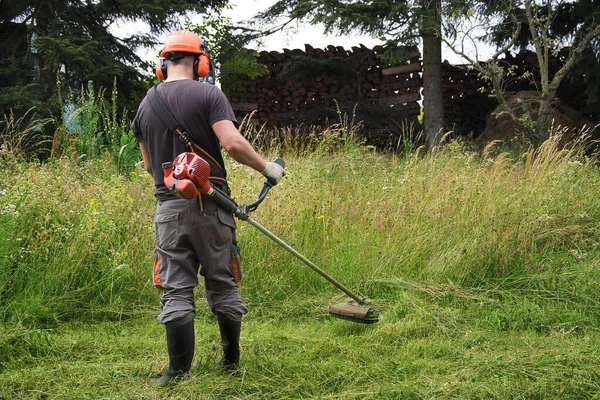

Huerto Feliz nació hace 10 años como un pequeño emprendimiento familiar, impulsado por la pasión por la naturaleza y el cuidado de los espacios verdes. Sus fundadores comenzaron ofreciendo servicios básicos de jardinería en su propio barrio, enfocándose en el corte de pasto y el mantenimiento general de jardines. Con herramientas simples pero mucho compromiso, rápidamente comenzaron a ganarse la confianza de sus primeros clientes. Con el paso del tiempo, la empresa fue creciendo tanto en experiencia como en reputación. Ampliaron su oferta de servicios incorporando la poda de árboles, el diseño de áreas verdes y el mantenimiento integral de jardines residenciales y comerciales. Este crecimiento se sostuvo en el esfuerzo constante, la responsabilidad en cada trabajo y una atención cercana y personalizada hacia cada cliente. Uno de los pilares de Huerto Feliz ha sido siempre la calidad de su servicio. La empresa se ha destacado por cumplir con los plazos establecidos, ofrecer asesoramiento experto y aplicar técnicas adecuadas para el cuidado de plantas y árboles. Gracias a esto, muchos clientes han mantenido una relación de largo plazo con la empresa y recomiendan activamente sus servicios, consolidando así su buena reputación en el mercado. Hoy, tras una década de trayectoria, Huerto Feliz se posiciona como una empresa confiable en el rubro de la jardinería. Con un equipo más amplio y herramientas modernas, continúan trabajando con el mismo espíritu con el que comenzaron: brindar un servicio profesional, cercano y comprometido con el cuidado del entorno natural.
Contraté a Huerto Feliz para el mantenimiento de mi jardín y realmente superaron mis expectativas. El corte de pasto quedó impecable y además me orientaron sobre cómo cuidar mejor mis plantas. Se nota el profesionalismo y la dedicación en cada detalle.
Tenía un árbol que necesitaba poda urgente por seguridad, y el equipo de Huerto Feliz hizo un trabajo excelente. Fueron puntuales, ordenados y muy cuidadosos. Desde entonces los recomiendo a todos mis conocidos
Llevo varios años trabajando con Huerto Feliz para el mantenimiento de mis áreas verdes y siempre han sido muy responsables. Destaco su buena disposición y el trato cercano. Es una empresa en la que realmente se puede confiar.
